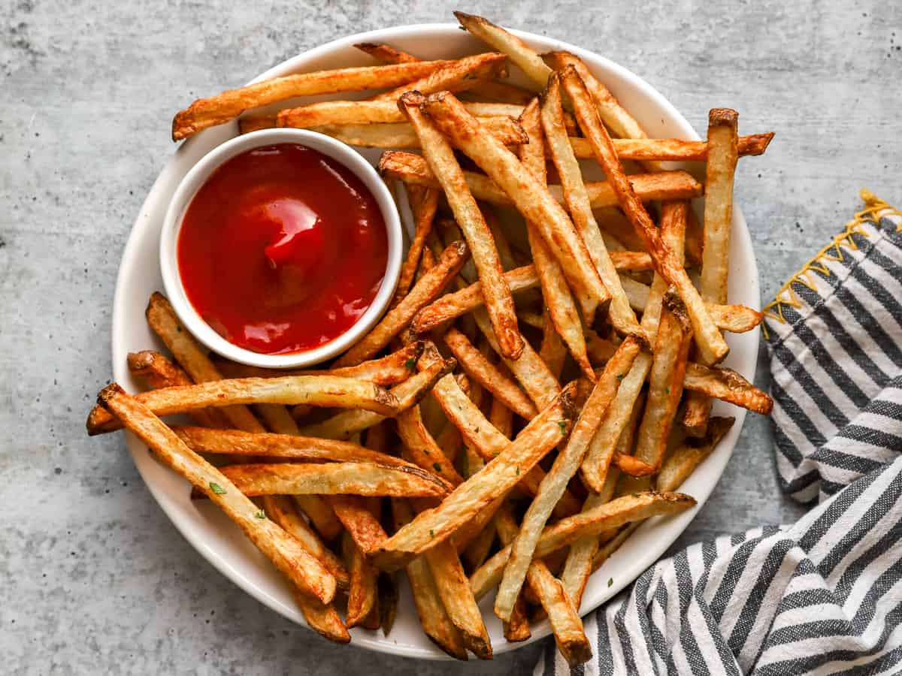

Kentang goreng adalah makanan ringan yang terbuat dari kentang yang dipotong memanjang kemudian digoreng hingga berwarna keemasan dan renyah. Makanan ini sangat populer di berbagai negara dan sering dijadikan camilan maupun pelengkap hidangan utama.
Kentang goreng biasanya dibumbui dengan garam, namun juga dapat ditambahkan berbagai rasa seperti keju, barbeque, balado, atau saus sambal dan saus tomat sebagai pelengkap.
Teksturnya yang renyah di luar dan lembut di dalam membuat kentang goreng digemari oleh berbagai kalangan usia. Makanan ini sering disajikan di restoran cepat saji maupun dibuat sendiri di rumah.